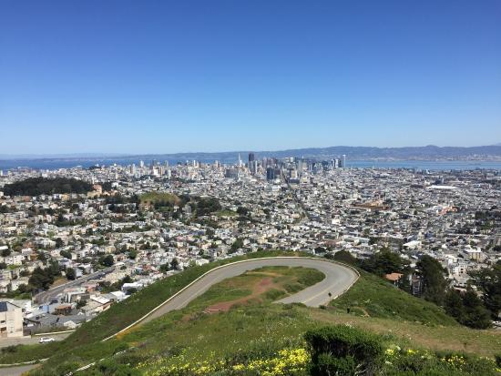
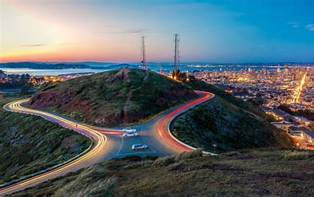
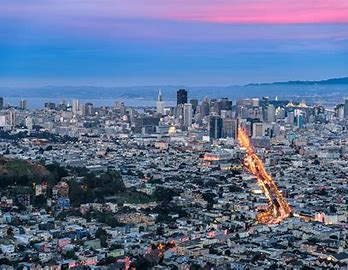
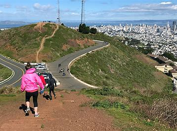

History
Twin Peaks is one of the highest and most famous points in San Francisco, offering stunning views of the city and the bay. The peaks are named "Eureka" and "Noe" and rise about 922 feet above sea level. Historically, the Ohlone people, the area's original inhabitants, used these peaks as lookout points.
Today, Twin Peaks is a popular tourist destination, known for its breathtaking panoramic views. It is a favorite spot for both locals and visitors who come to admire the scenery, take photographs, and enjoy the natural beauty of the area.
Visitor Information
- Location: Twin Peaks, San Francisco, CA.
- Best Time to Visit: Early morning or late afternoon for the best lighting and views.
- Admission: Free to visit and explore.
- Facilities: Limited parking available. No restrooms on site.
- Public Transportation: Easily reachable by bus and Muni.
Twin Peaks Gallery




